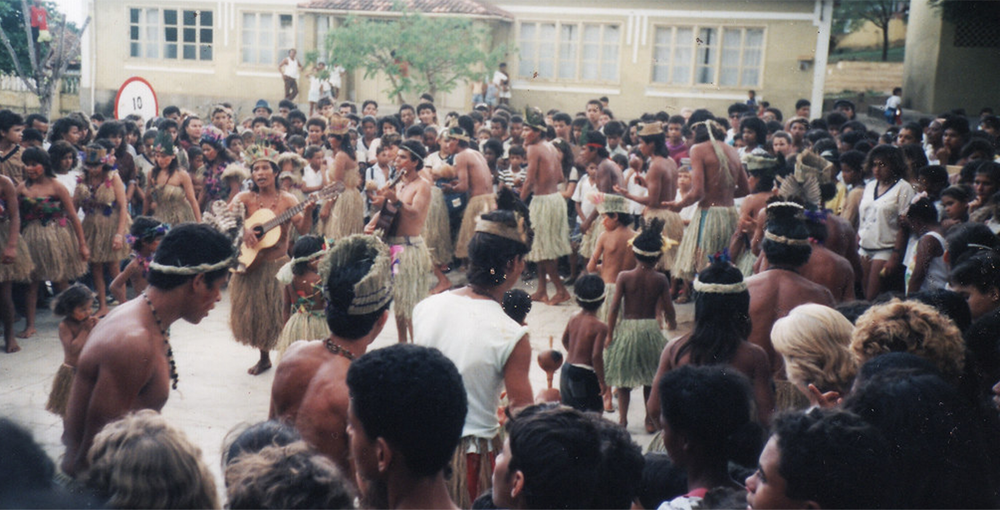

RAÍZES VIVAS
Permanecer e fazer-se presente
Raízes Vivas parte da presença indígena contemporânea, sem tratá-la como algo do passado ou reduzir a identidade a uma imagem fixa. A coleção busca reconhecer que permanecer não significa ficar imóvel: é manter vínculos, transmitir conhecimentos, reafirmar identidade e se reinventar diante das transformações da cidade.
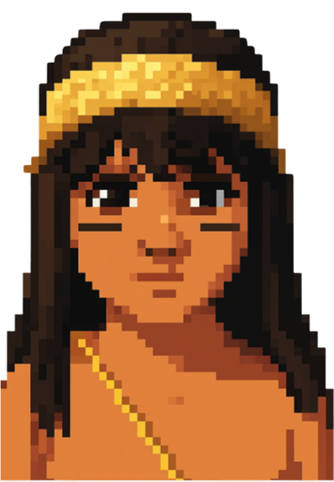
“Raízes” remete a origem, território e continuidade; “vivas” afirma que essa presença segue ativa no presente. A proposta é mostrar a identidade como algo que se atualiza e resiste: permanecer e fazer-se presente.
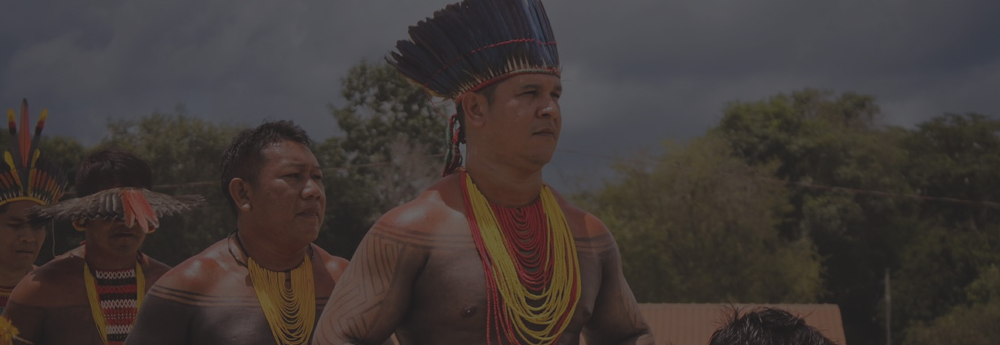
A força do coletivo mantêm
a longevidade da memória e
ressignifica o presente
Foto por Junior Tapirape Asiva/Acervo Fundo Brasil - História dos povos indígenas.
HISTÓRIA
Nós criamos nossos espaços
A presença indígena em São Paulo não começa com a migração: antes da colonização, o território já era ocupado por povos como os Tupiniquim e os Guaianá. Muitos caminhos indígenas originais perduram até hoje em avenidas e ruas da cidade,
carregando uma memória que antecede a própria formação urbana.
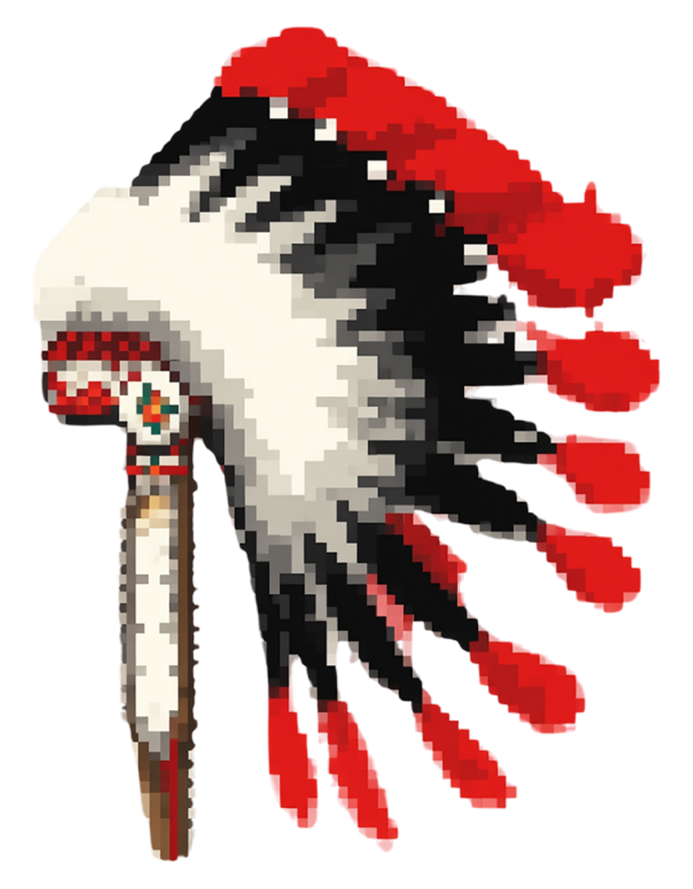
A coleção também reconhece os deslocamentos mais recentes, como o dos Pankararu que chegaram a São Paulo para trabalhar na construção civil e formaram comunidades como a Favela da Mandioca, no Real Parque. Ali, o cultivo da mandioca por Durvalino, considerado o primeiro morador, “fundou” um lugar na cidade e indigenizou o bairro — mostrando que a presença indígena continua produzindo território, mesmo em condições novas.
A identidade indígena, aqui, não está presa à aldeia ou ao lugar físico: é um sentimento de ser e permanecer, que se atualiza nas relações, nos rituais, nos conhecimentos e nas formas de habitar a cidade. Permanecer, nesse contexto, é um ato de resistência e continuidade.
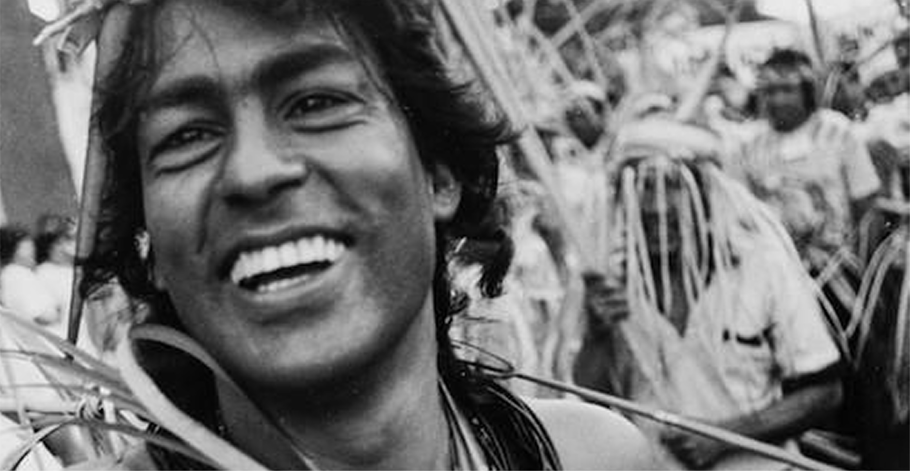
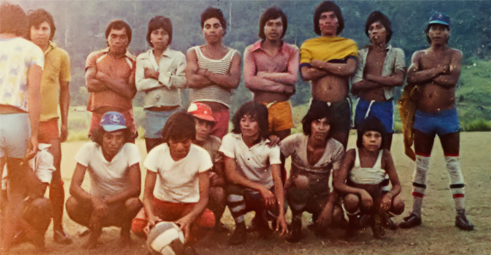
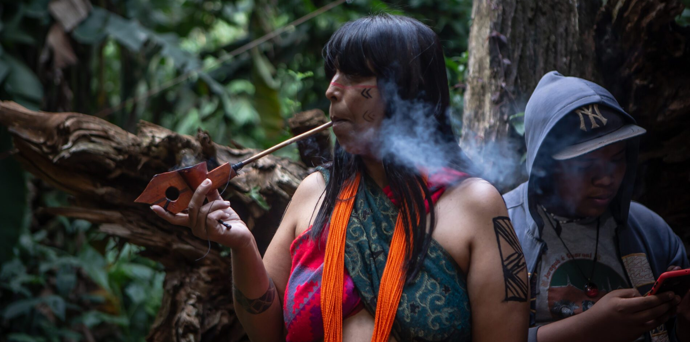
ELEMENTOS
Festividades, eventos, sociabilidade
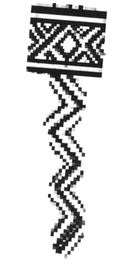
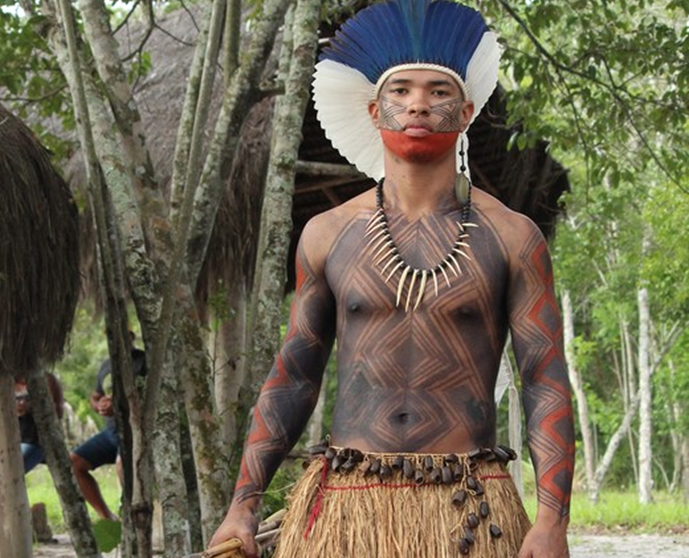
GRAFISMOS E
PINTURAS CORPORAIS
Formas geométricas, linhas, repetições e padrões (como os kusiwa Wajãpi) podem inspirar estampas, cortes e costuras, sem copiar símbolos específicos de um povo.
Kûarasy ra’yra pronto para o casamento, 2022. Foto por Beatriz Heleodoro.
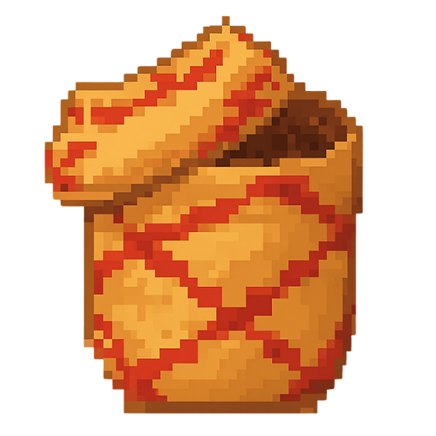
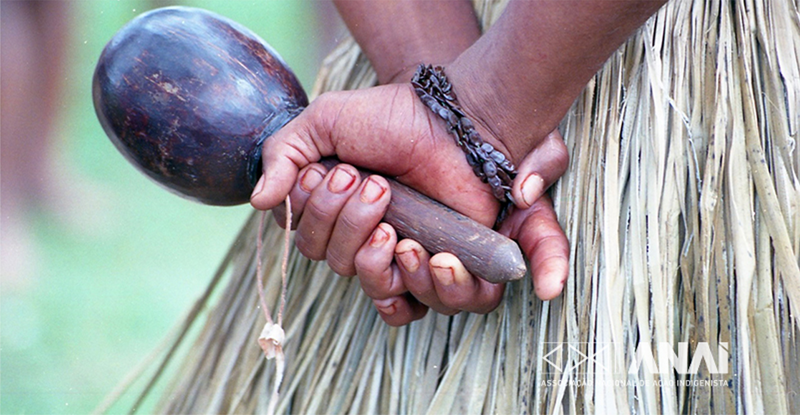
ARTESANATO
Cestarias, cerâmicas, trançados, colares e adornos que inspiram texturas, tramas e sobreposições.
Maracá, 1980 - 1990.
Foto por Marco Aurélio Martins.
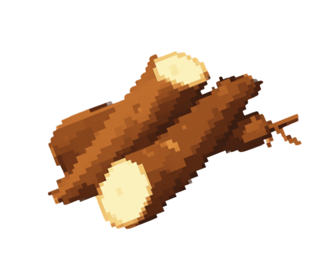
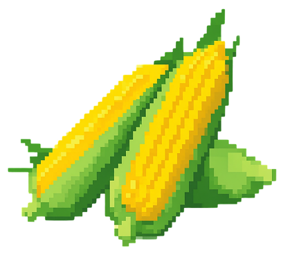
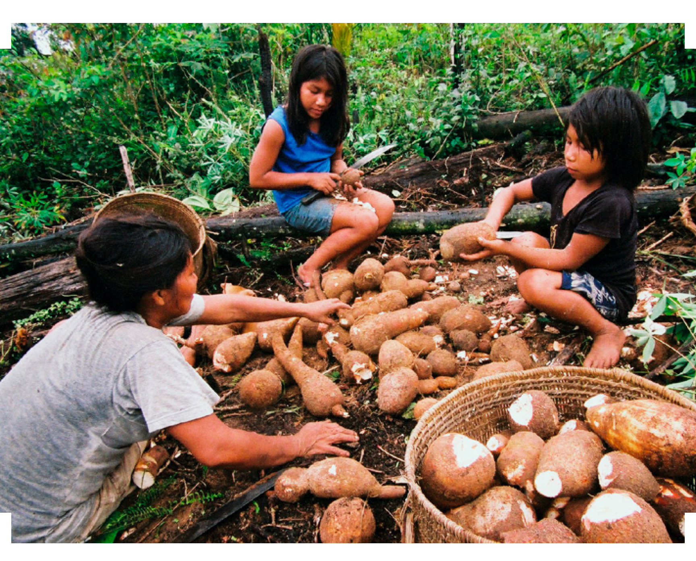
PLANTAS E
ALIMENTOS
Mandioca, milho e ervas medicinais são presentes na culinária e no cotidiano periférico. A relação com a terra e a natureza também vivem nos quintais, lajes e hortas comunitárias como formas de cultivar e habitar.
Roça da Dona Amélia (Tuyuka), 2025. Foto por Beto Ricardo
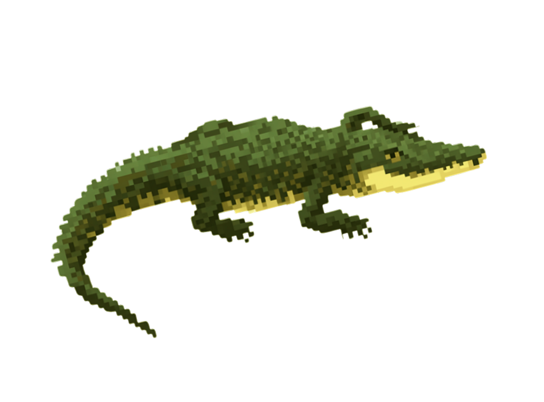
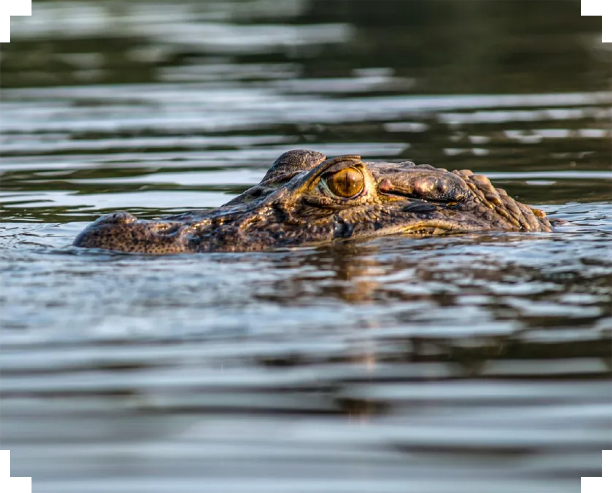
PALAVRAS DE
ORIGEM INDÍGENA
Estão presentes em nomes de lugares, rios e cidades, carregando memória e transformando a cultura na própria linguagem.
Jacaré-açu, 2017. Foto por Jon A Cox